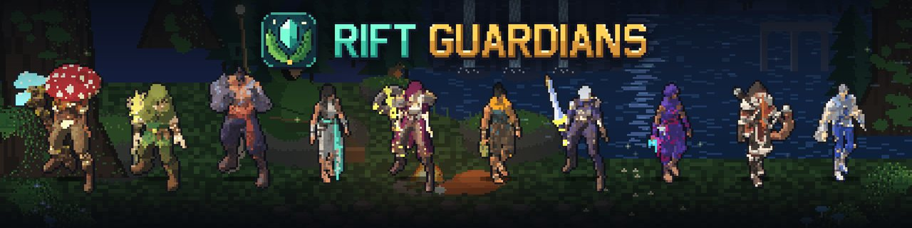
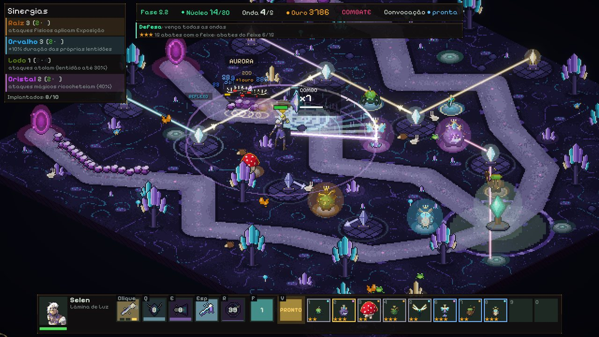
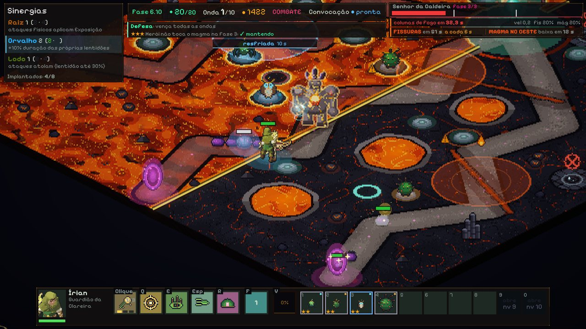
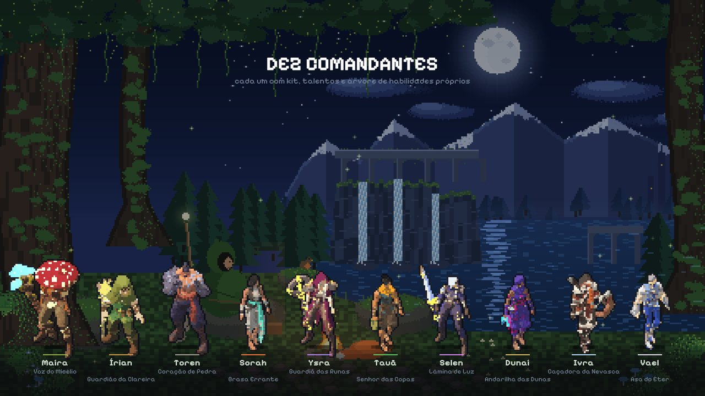
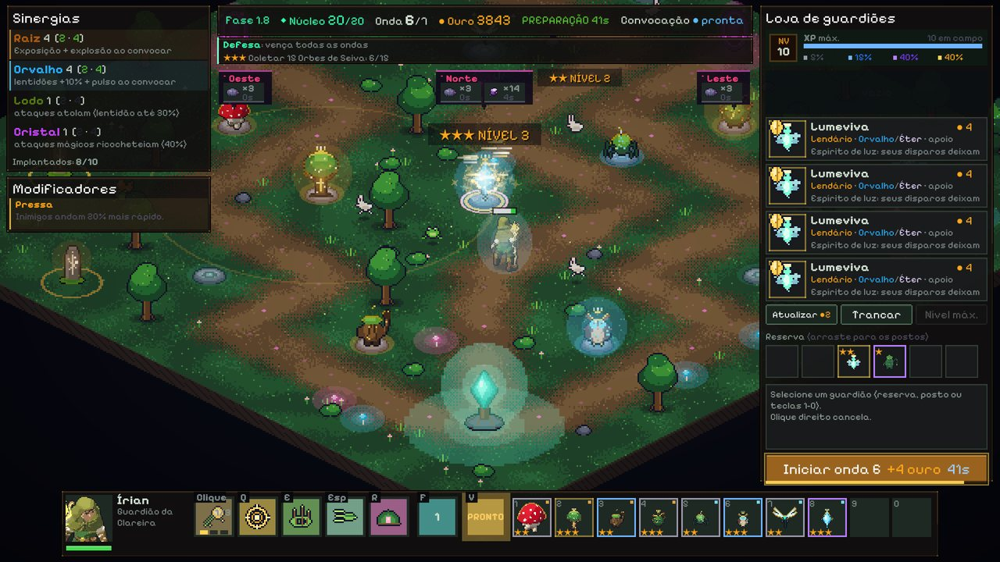

Rift Guardians
Defenda o núcleo com um comandante que você controla e um bando de guardiões que você monta, funde e convoca para lutar ao seu lado.
Baixar para Windows — gratuito Como jogar

O que é o jogo
- Defesa de torres com herói. Você anda pelo mapa com o comandante, ataca, usa habilidades e decide onde cada guardião fica.
- Bando, loja e fusão. Entre as ondas, compre guardiões, guarde na reserva e junte cópias iguais para subir de nível.
- Convocação. Um guardião pode sair do posto por um tempo para lutar ao lado do comandante.
- Campanha grande, jogável sem internet. São 10 mapas, 100 fases e 10 chefes, cada mapa com uma mecânica própria, e um modo Heroico mais difícil.
- Gratuito de verdade. Sem compras com dinheiro, sem anúncios. As moedas do jogo só se ganham jogando.








Requisitos
| Sistema | Windows 10 ou 11, 64 bits |
|---|---|
| Processador | a medir |
| Memória | a medir |
| Placa de vídeo | a medir |
| Espaço em disco | cerca de 520 MB livres |
| Internet | Não é necessária para a campanha. Os modos online precisam de internet; o PvP usa a porta UDP 7778. |
Os requisitos mínimos ainda estão sendo medidos em máquinas de teste. O que aparece como "a medir" será preenchido antes do lançamento.
Antes de baixar
- O Windows mostra um aviso azul ao abrir o jogo pela primeira vez, porque ele não tem assinatura digital paga. Veja o que é e como continuar.
- A conta online é criada no seu computador, sem e-mail e sem senha. Leia a Política de Privacidade e os Termos de Uso.
- Dúvidas e problemas: Suporte. Comunidade: Discord.